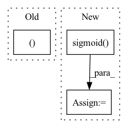

Pattern ID :1289
Before Change
:param nodes_output:
:return:
nums_nodes, id = graph.batch_num_nodes(), 0
items_embedding = self.item_embedding(torch.tensor([i for i in range(self.items_total)]).to(nodes.device))
batch_embedding = []
for num_nodes in nums_nodes:After Change
:return:
items_embedding = self.item_embedding(torch.tensor([i for i in range(self.items_total)]).to(nodes.device))
alpha = torch.sigmoid( self.alpha)
embed = (1 - alpha) * items_embedding.clone() + alpha * nodes_output
return embed
In pattern: SUPERPATTERN
Frequency: 3
Non-data size: 3
Instances Fragment ID: 3790603
Project Name: benedekrozemberczki/pytorch_geometric_temporal
Commit Name: c402d2a14167bceaa3c8d3845879f8056e8aead7
Time: 2021-07-18
Author: benedek.rozemberczki@gmail.com
File Name: torch_geometric_temporal/nn/attention/dnntsp.py
M Class Name: GlobalGatedUpdater
N Class Name: GlobalGatedUpdater
M Method Name: forward(3)
N Method Name: forward(4)
M Parent Class: nn.Module
N Parent Class: nn.Module
M File Name: torch_geometric_temporal/nn/attention/dnntsp.py
N File Name: torch_geometric_temporal/nn/attention/dnntsp.py
M Start Line: 78
M End Line: 98
N Start Line: 85
N End Line: 87
Before Change
self.update_location_attention(alignment)
// apply forward attention if enabled
if self.forward_attn:
context, self.attention_weights = self.apply_forward_attention(
inputs, alignment, query)
else:
context = torch.bmm(alignment.unsqueeze(1), inputs)After Change
// compute transition agent
if self.forward_attn and self.trans_agent:
ta_input = torch.cat([context, query.squeeze(1)], dim=-1)
self.u = torch.sigmoid( self.ta(ta_input))
return context
Fragment ID: 3790604
Project Name: coqui-ai/tts
Commit Name: 40f56f9b000bb03384ebe883c03380b260a6a205
Time: 2019-07-24
Author: thomas@twerkmeister.com
File Name: layers/common_layers.py
M Class Name: Attention
N Class Name: Attention
M Method Name: forward(5)
N Method Name: forward(5)
M Parent Class: nn.Module
N Parent Class: nn.Module
M File Name: layers/common_layers.py
N File Name: layers/common_layers.py
M Start Line: 262
M End Line: 267
N Start Line: 255
N End Line: 266
Before Change
attn_scores = torch.stack(attn_scores).transpose(0, 1)
mel_outputs = torch.stack(mel_outputs).transpose(0, 1).contiguous()
return mel_outputs, attn_scores
def is_end_of_frames(output, eps=-3.4):
return (output.data <= eps).all()After Change
// Stop token prediction
stop = self.stop_proj(decoder_output)
stop = torch.sigmoid( stop)
// Store predictions
mel_outputs += [output]
attn_scores += [attention_score] Fragment ID: 3790606
Project Name: thuhcsi/tacotron
Commit Name: 34e667ab8dfa8ce50329b538965b161efb3f9aaa
Time: 2021-03-14
Author: johnson.tsing@gmail.com
File Name: model/tacotron.py
M Class Name: Decoder
N Class Name: Decoder
M Method Name: forward(4)
N Method Name: forward(4)
M Parent Class: nn.Module
N Parent Class: nn.Module
M File Name: model/tacotron.py
N File Name: model/tacotron.py
M Start Line: 143
M End Line: 167
N Start Line: 116
N End Line: 176